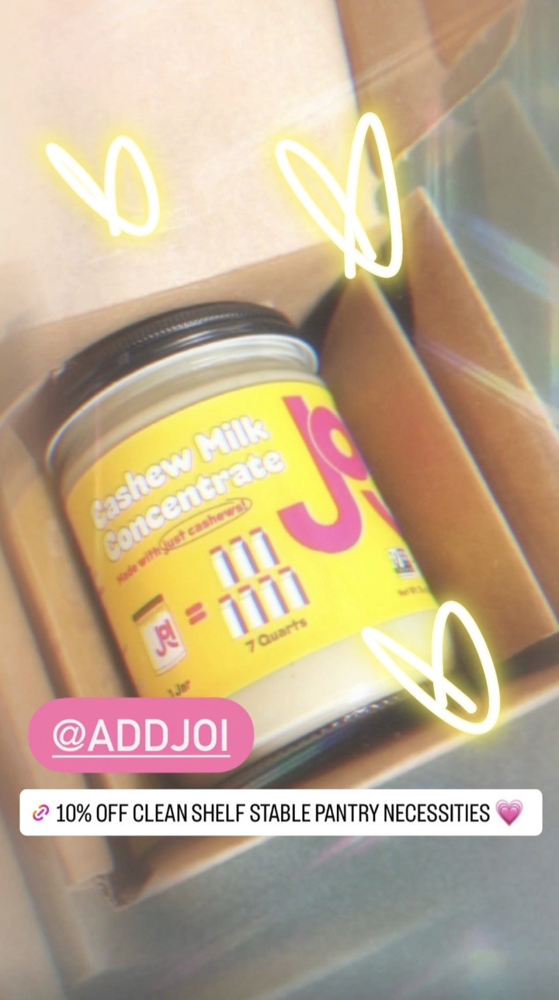
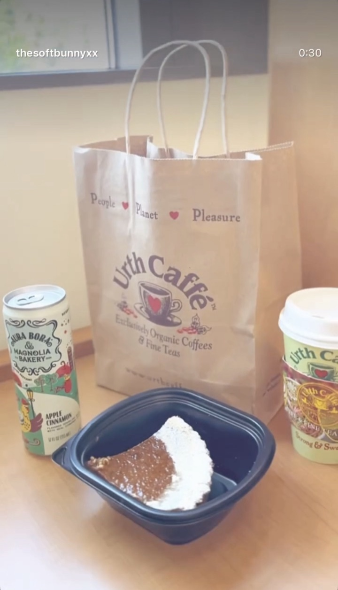
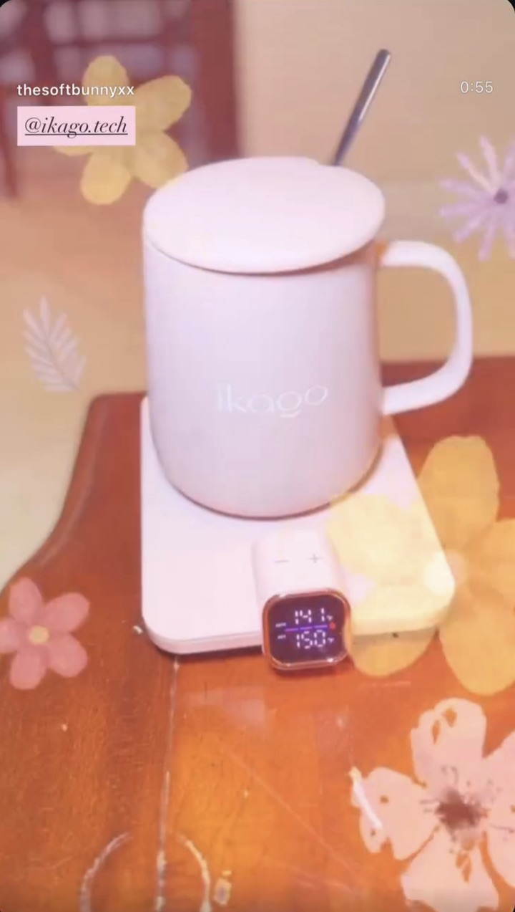

01
01Gastronomy
Vegan dishes worth slowing down for: what I cook at home, and the cafés and restaurants I love.
✧ plant-curious · food & drink inspiration
I’m the soft bunny. I find, cook, and photograph beautiful vegan food and drinks, and share them with 20K+ people on Instagram. I also partner with brands and local spots that belong at the table.
Orange County, California ↔ Sài Gòn, Vietnam


01 / What I share
Every post on @thesoftbunnyxx is one of these three. If you follow along, this is what you’ll see.
01Vegan dishes worth slowing down for: what I cook at home, and the cafés and restaurants I love.
 02
02Matcha, coffee, and pretty little drinks, all dairy-free and all made to be savored.
 03
03The small rituals around a good meal: a beautiful plate, a slow morning, a product that makes the day softer.
02 / The work
Photographed and styled by me: from my kitchen, my favorite tables, and past brand partnerships.



Brand images are selected past PR and content work; they do not imply a current partnership.


03 / For brands & local businesses
Plant-based food and drink, kitchen and home, and vegan beauty and wellness.
Past partnerships and gifted collaborations. Listing a brand doesn’t mean we’re working together now.
Rates and audience details are shared by email, matched to what you have in mind.
The person behind the plates
I’m the creator behind @thesoftbunnyxx. I cook, style, and photograph a fully plant-based life between Orange County and Sài Gòn.
I’m drawn to food that feels generous: a familiar bowl, an unexpected ingredient, a beautifully set table. Vegan food can be the most beautiful thing on the table, and I’m here to show it.
Follow the everyday moments ↗04 / Say hello
For partnerships, include your brand, what you’d like to make, and your timing. I reply from this address only.
Prefer a form? Open the partnership form ↗